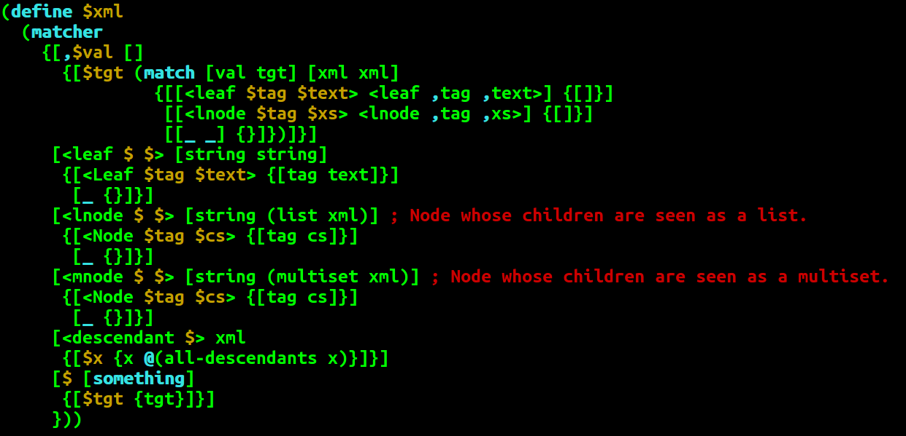

What is Egison?
If you would like to know about Egison before you install it, see Quick Tutorial.
How to install
1. Install Haskell Platform
To install Egison, you need to install Haskell Platform.
This is because Egison is implemented in Haskell and distributed as a Hackage package.
If you are using Linux that has apt-get command, execute the following commands.
% sudo apt-get update
% sudo apt-get install haskell-platformIf you are using Windows or MacOSX, then you can download an installer from here.
2. Install Egison via Hackage
After you installed Haskell Platform, perform the following commands in the terminal.
% cabal update
% cabal install egison
...
Installing executable(s) in /home/xxx/.cabal/bin
Registering egison-X.X.X...3. Set PATH for your shell
If successfully installed, there will be an output where the binary file is generated as above.
Please add new path to $PATH variable of your shell, to make your shell be able to find egison command.
For example, if you are using bash, you will execute commands as follows.
% echo "PATH=\$PATH:/home/xxx/.cabal/bin" >> ~/.bashrc
% source ~/.bashrcIf your OS is Windows, you don't need to configure the path of the shell.
4. Execute Egison!
Then, you can run Egison interpreter with a command egison.
Type Control-D to terminate the interpreter.
% egison
Egison Version X.X.X (C) 2011-2013 Satoshi Egi
http://www.egison.org
Welcome to Egison Interpreter!
> ^D
Leaving Egison Interpreter.How to update
You can update Egison with the following commands.
% cabal update
% cabal install egisonHow to use Egison mode on your emacs
To use Egison mode on your Emacs, you should copy a file egison-mode.el, which exists in ~/.cabal/share/,
to load-path of your emacs, and add following lines in your .emacs.
(autoload 'egison-mode "egison-mode" "Major mode for editing Egison code." t)
(setq auto-mode-alist
(cons `("\\.egi$" . egison-mode) auto-mode-alist))The following is a sample of Egison mode on Emacs.
